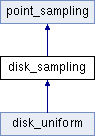

Point sampling of the unit disk. More...
#include <disk_sampling.h>
Inheritance diagram for disk_sampling:

Public Member Functions | |
| void | fill_from_square_map (const square_sampling &ss) |
| Fill the sampling by mapping it from a square sampling. More... | |
 Public Member Functions inherited from point_sampling Public Member Functions inherited from point_sampling | |
| std::unique_ptr< point_sampling > | clone () const |
| Clone the point_sampling. | |
| virtual void | fill ()=0 |
| Fill the sampling with points according to specific input parameters. More... | |
| bun | to_ray_bundle (const Vec3 &direction) const |
| Convert to a ray bundle with a given direction. More... | |
| triangulation | triangulate () const |
| Triangulate the points into a mesh structure over points. More... | |
| void | plot () const |
| Plot the points in a window. | |
| void | plot_tofile (std::string filename) const |
| Plot to a file. | |
| void | scale (double factor) |
| Scale the sampling. More... | |
Additional Inherited Members | |
| Public Attributes inherited from point_sampling | |
| std::vector< Vec2 > | points |
| Vector of 2D points storing the sampling. | |
Detailed Description
Point sampling of the unit disk.
Member Function Documentation
◆ fill_from_square_map()
| void disk_sampling::fill_from_square_map | ( | const square_sampling & | ss | ) |
Fill the sampling by mapping it from a square sampling.
The points from the square sampling are copied and mapped onto the unit disk. The map function is due to https://psgraphics.blogspot.com/2011/01/improved-code-for-concentric-map.html
The documentation for this class was generated from the following files:
- src/disk_sampling/disk_sampling.h
- src/disk_sampling/disk_sampling.cpp